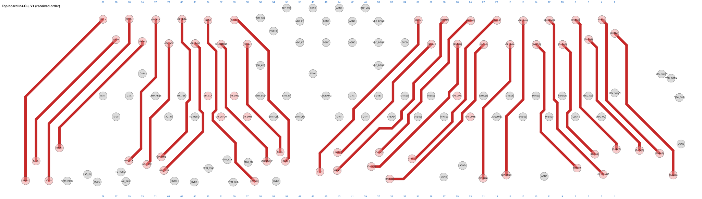
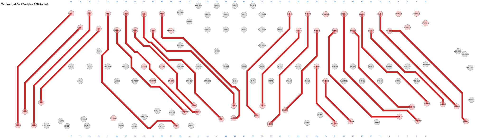
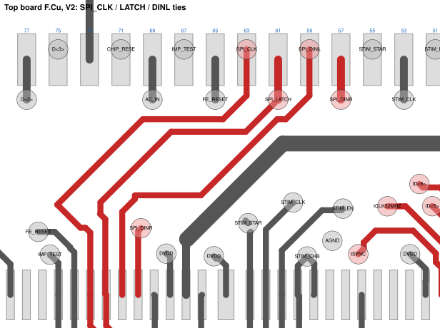
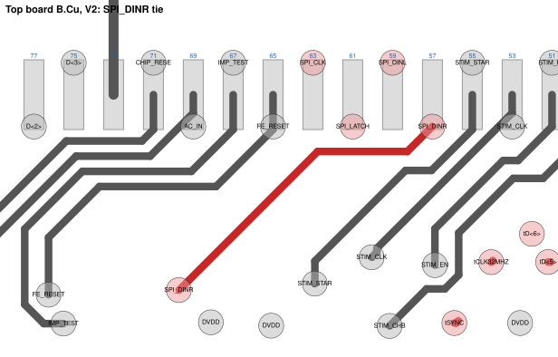

ASIC board pair: original pin order restored
Top board V2 · edited 11 Nov 2026, 19:58 CST · bottom board V2 · edited 11 Nov 2026, 19:58 CST · built on power-via V1
The pair now presents the original PCB-5 order (pin map V5) at the FPGA-LDO side, so FPGA-LDO A V12 and the Option B router V2 need no change. Every top-chip output lands on the FPGA net named for it, on both ports of both FPGA-LDO boards. This closes review blocker P-B1 and major P-M2 (no extra FPGA outputs are needed).
Bottom board V2 KiCad ↓Top board V2 KiCad ↓Pin-by-pin stack table ↓
What changed
- Top board, In4: the 18 moved data lines (11 for U01_BCD2, 7 for U01_BCD1) are re-routed from their existing chip-side vias to the original pins, plus the two U01_BCD2 SPI ties. Straight 0/45/90° segments, 0.0762 mm as before, no new vias. In4 track length 136.4 → 125.2 mm.
- Top board, SPI inputs: each top chip now takes SPI_DINR/L, SPI_CLK and SPI_LATCH from the shared odd-row lines, the same lines as the bottom chip in the same position (U01_BCD2: pins 23/25, U01_BCD1: pins 57/59; latch 61, clock 63). For U01_BCD1, CLK, LATCH and DINL are short F.Cu ties and DINR a B.Cu tie, because In4 is full there. The three chip-side vias these ties made unused were removed.
- Bottom board: copper unchanged. The pass-through nets are renamed back to the original order (schematic and PCB).
- Pins 2, 4, 6, 8, 24, 58 are spare again (SPARE_Pn, still passed through). The FPGA-LDO boards leave them open, as before.
- Schematics: J3/J4 labels on both boards and the eight chip SPI labels on the top board. KiCad parity 0 on both.
Trade-off
The rework gave the top chips their own SPI lines; this V2 gives that up, as pin map V5 always assumed. The top chip in each position receives the same configuration stream as the bottom chip under it (ASIC7 with ASIC5, ASIC8 with ASIC6, and so on). If independent top-chip configuration is needed later, it needs 12 more FPGA outputs and a new FPGA-LDO map.
Still open
- Blocker P-B2: 28 crossing via-span pairs (unchanged; see the review page).
- DISC_OUT on pins 3/5 still ties two chips per pin.
- The other major items from the review are unchanged.
Stack check
| FPGA-LDO board | Port | V1: outputs right | V2: outputs right |
|---|---|---|---|
| Option A V12 | J3 | 26 / 44 | 44 / 44 |
| Option A V12 | J4 | 26 / 44 | 44 / 44 |
| Option B router V2 | J3 | 26 / 44 | 44 / 44 |
| Option B router V2 | J4 | 26 / 44 | 44 / 44 |
| Board | Unconnected | Parity | DRC errors | DRC warnings | ERC errors |
|---|---|---|---|---|---|
| Top V1 | 0 | 0 | 1 | 4 | 12 |
| Top V2 | 0 | 0 | 1 | 4 | 12 |
| Bottom V1 | 0 | 0 | 1 | 4 | 12 |
| Bottom V2 | 0 | 0 | 1 | 4 | 12 |
Pin map (FPGA-LDO A, J3)
| Pin | FPGA-LDO net | Top board V1 | Top board V2 | Top chip pad (V2) | Check |
|---|---|---|---|---|---|
| 2 | unconnected-(J3-Pad2) | T_READ(2) | SPARE_P2 | spare | |
| 4 | unconnected-(J3-Pad4) | T_D<8>(2) | SPARE_P4 | spare | |
| 6 | unconnected-(J3-Pad6) | T_D<7>(2) | SPARE_P6 | spare | |
| 8 | unconnected-(J3-Pad8) | T_D<6>(2) | SPARE_P8 | spare | |
| 10 | ASIC8_READ | T_D<5>(2) | T_READ(2) | U01_BCD2.READ | ok |
| 12 | ASIC8_DATA8 | T_CLK32MHZ(2) | T_D<8>(2) | U01_BCD2.DATAR<1> | ok |
| 14 | ASIC8_DATA7 | T_SYNC(2) | T_D<7>(2) | U01_BCD2.DATAR<2> | ok |
| 16 | ASIC8_DATA6 | T_SPI_DINR(2) | T_D<6>(2) | U01_BCD2.DATAR<3> | ok |
| 18 | ASIC8_DATA5 | T_SPI_DINL(2) | T_D<5>(2) | U01_BCD2.DATAR<4> | ok |
| 20 | ASIC8_CLK32MHz_Out | T_D<4>(2) | T_CLK32MHZ(2) | U01_BCD2.CLK32MHZ | ok |
| 22 | ASIC8_SYNC | T_D<3>(2) | T_SYNC(2) | U01_BCD2.SYNC | ok |
| 24 | unconnected-(J3-Pad24) | T_D<2>(2) | SPARE_P24 | spare | |
| 26 | ASIC8_DATA4 | T_D<1>(2) | T_D<4>(2) | U01_BCD2.DATAL<1> | ok |
| 28 | ASIC8_DATA3 | T_READ | T_D<3>(2) | U01_BCD2.DATAL<2> | ok |
| 30 | ASIC8_DATA2 | T_D<8> | T_D<2>(2) | U01_BCD2.DATAL<3> | ok |
| 32 | ASIC8_DATA1 | T_D<7> | T_D<1>(2) | U01_BCD2.DATAL<4> | ok |
| 58 | unconnected-(J3-Pad58) | T_D<6> | SPARE_P58 | spare | |
| 60 | ASIC7_READ | T_D<5> | T_READ | U01_BCD1.READ | ok |
| 62 | ASIC7_DATA8 | T_CLK32MHZ | T_D<8> | U01_BCD1.DATAR<1> | ok |
| 64 | ASIC7_DATA7 | T_SYNC | T_D<7> | U01_BCD1.DATAR<2> | ok |
| 66 | ASIC7_DATA6 | T_SPI_DINR | T_D<6> | U01_BCD1.DATAR<3> | ok |
| 68 | ASIC7_DATA5 | T_SPI_DINL | T_D<5> | U01_BCD1.DATAR<4> | ok |
| 70 | ASIC7_CLK32MHz_Out | T_SPI_LATCH | T_CLK32MHZ | U01_BCD1.CLK32MHZ | ok |
| 72 | ASIC7_SYNC | T_SPI_CLK | T_SYNC | U01_BCD1.SYNC | ok |
| 74 | ASIC7_DATA4 | T_D<4> | T_D<4> | U01_BCD1.DATAL<1> | ok |
| 76 | ASIC7_DATA3 | T_D<3> | T_D<3> | U01_BCD1.DATAL<2> | ok |
| 78 | ASIC7_DATA2 | T_D<2> | T_D<2> | U01_BCD1.DATAL<3> | ok |
| 80 | ASIC7_DATA1 | T_D<1> | T_D<1> | U01_BCD1.DATAL<4> | ok |
Top board copper




Routes
| Line | Layer | To pin | Length (mm) | Bends |
|---|---|---|---|---|
| T_READ(2) | In4.Cu | 10 | 5.66 | 3 |
| T_D<8>(2) | In4.Cu | 12 | 5.46 | 1 |
| T_D<7>(2) | In4.Cu | 14 | 4.81 | 4 |
| T_D<6>(2) | In4.Cu | 16 | 5.38 | 4 |
| T_D<5>(2) | In4.Cu | 18 | 4.77 | 3 |
| T_CLK32MHZ(2) | In4.Cu | 20 | 6.66 | 3 |
| T_SYNC(2) | In4.Cu | 22 | 5.89 | 3 |
| T_D<4>(2) | In4.Cu | 26 | 4.08 | 3 |
| T_D<3>(2) | In4.Cu | 28 | 5.55 | 3 |
| T_D<2>(2) | In4.Cu | 30 | 3.97 | 2 |
| T_D<1>(2) | In4.Cu | 32 | 5.42 | 3 |
| SPI_DINR(2) | In4.Cu | 23 | 2.24 | 1 |
| SPI_DINL(2) | In4.Cu | 25 | 2.85 | 2 |
| SPI_CLK | F.Cu | 63 | 3.58 | 3 |
| SPI_LATCH | F.Cu | 61 | 2.95 | 3 |
| SPI_DINL | F.Cu | 59 | 3.34 | 4 |
| SPI_DINR | B.Cu | 57 | 3.22 | 2 |
| T_SYNC | In4.Cu | 72 | 7.47 | 7 |
| T_CLK32MHZ | In4.Cu | 70 | 5.06 | 5 |
| T_D<5> | In4.Cu | 68 | 5.84 | 6 |
| T_D<6> | In4.Cu | 66 | 4.54 | 5 |
| T_D<7> | In4.Cu | 64 | 6.44 | 8 |
| T_D<8> | In4.Cu | 62 | 5.42 | 5 |
| T_READ | In4.Cu | 60 | 6.80 | 8 |